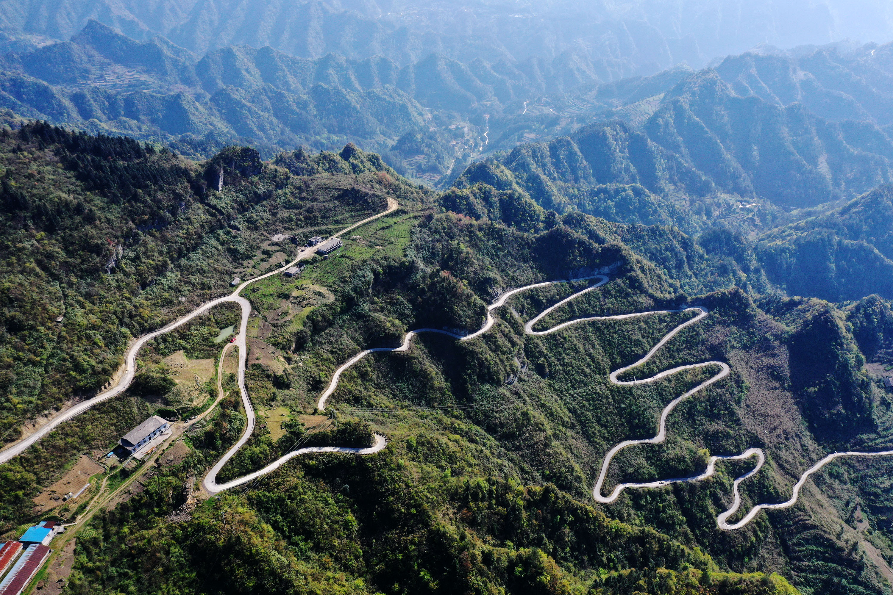
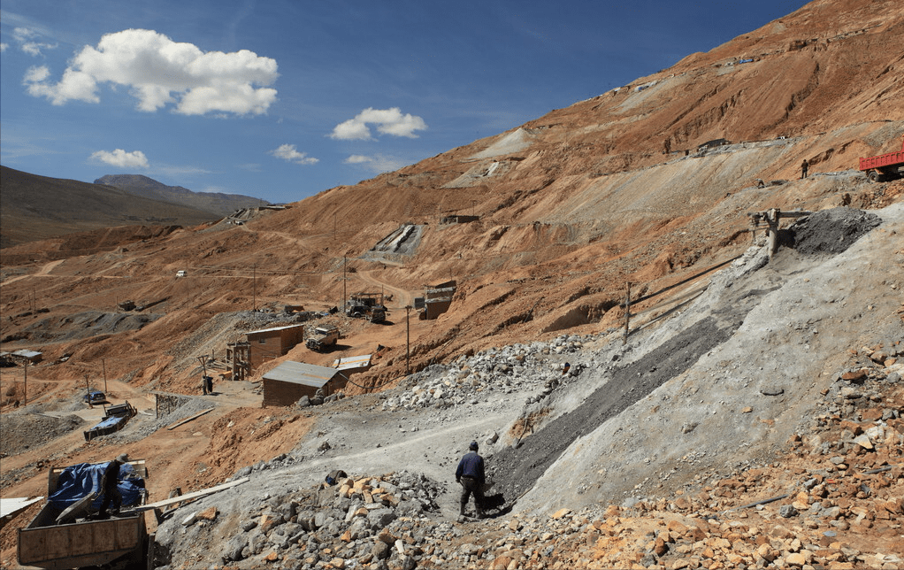

人口情况
著名人物
城市荣誉
城市之最
人口情况
著名人物
城市荣誉
城市之最
悬挂在联合国大厅的世界地图上，仅仅标出了中国四个城市的名字，其中一个就是重庆。 巍峨的高山，低回的河谷，承载着重庆三千年的文明史。在浩荡的历史长河中，重庆以其巨大的凝聚力和辐射力，成为古代区域性的军事政治中心和重要的商业物资集散地，历千载而不衰，从容吐纳万物，化育生机。近代一百多年来，重庆又经历了因商而兴、内迁而盛、改革腾飞的发展道路，从一个古代军事要隘，发展成为开放的、连接我国中西部的战略枢纽；从古代的区域商贸中心，发展成为长江上游的经济中心；从十九世纪的单一型转口贸易城市，成长为中国西部最大的多功能的现代工商业城市；从位居四川盆地东部的港口城市，发展成为立足中国内陆、面向五洲四海的中央直辖市。重庆在我国西部地区的迅速崛起，不论是过去的辉煌历程还是今天的日新月异，都在中华民族的发展史上留下了深刻的印记，为世人所关注凝眸。
举世瞩目的三峡工程建设和库区移民开发，为重庆发展注入了新的活力；中央直辖市的设立，开辟了重庆发展的新天地；西部大开发战略的实施，揭开了重庆加快发展的新篇章。今天的重庆在地理、人文和社会环境上，正在形成越来越强的磁场，产生着不可抗拒的引力，正日益凸显其气度恢宏、激情飞扬的魅力！这是一个富有三千年巴渝文化底蕴的历史名城丰姿绰约， 一个中国最年轻的直辖市正在催生无尽的现代神话，一个世界最大的内陆山水城正在不断创造人间奇迹，一个长江上游经济中心的新重庆正在开发中走向世界！
重庆位于中国西南部、长江上游地区，地跨东经105°11'~110°11'、北纬28°10'~32°13'之间的青藏高原与长江中下游平原的过渡地带。东邻湖北、湖南，南靠贵州，西接四川，北连陕西；辖区东西长470千米，南北宽450千米，幅员面积8.24万平方千米，为北京、天津、上海三个直辖市总面积的2.39倍。
重庆北有大巴山，东有巫山，东南有武陵山，南有大娄山。重庆主城区海拔高度多在168～400米之间。市内最高峰为巫溪县东部边缘的界梁山主峰阴条岭，海拔2796.8米；最低为巫山县长江水面，海拔73.1米。重庆海拔高差2723.7米。境内山高谷深，沟壑纵横，山地面积占76%，丘陵占22%，河谷平坝仅占2%。其中，海拔500米以下的面积3.18万平方公里，占幅员面积38.61%；海拔500～800米的2.09万平方公里，占幅员面积的25.41%；海拔800～1200米的1.68万平方公里，占幅员面积的20.42%；海拔1200米以上的1.28万平方公里，占幅员面积的15.56%。
重庆属亚热带季风性湿润气候，年平均气温16~18℃，长江河谷的巴南、綦江、云阳等地达18.5℃以上，东南部的黔江、酉阳等地14~16℃，东北部海拔较高的城口仅13.7℃，最热月份平均气温26~29℃，最冷月平均气温4~8℃，采用候温法可以明显地划分四季。年平均降水量较丰富，大部分地区在1000~1350毫米，降水多集中在5~9月，占全年总降水量的70%左右，春夏之交夜雨尤甚，素有“巴山夜雨”之说。 重庆年平均相对湿度多在70%~80%，在中国属高湿区。年日照时数1000~1400小时，日照百分率仅为25%~35%，为中国年日照最少的地区之一，冬、春季日照更少，仅占全年的35%左右。主要气候特点可以概括为：冬暖春早，夏热秋凉，四季分明，无霜期长；空气湿润，降水丰沛；太阳辐射弱，日照时间短；多云雾，少霜雪；光温水同季，立体气候显着，气候资源丰富，气象灾难频繁。 重庆在地形和气候双重作用下，多雾，素有“雾重庆”“雾都”之称。年平均雾日是104天，有世界雾都之称的英国伦敦年平均雾日只有94天，远东雾都的日本东京也只有55天。壁山区的云雾山全年雾日多达204天，堪称“世界之最”。
重庆的主要河流有长江、嘉陵江、乌江、涪江、綦江、大宁河、阿蓬江、酉水河等。长江干流自西向东横贯全境，流程长达665公里，横穿巫山三个背斜，形成著名的瞿塘峡、巫峡和湖北的西陵峡，即举世闻名的长江三峡；嘉陵江自西北而来，三折于渝中区入长江，乌江于涪陵区汇入长江，有沥鼻峡、温塘峡、观音峡，即嘉陵江小三峡。

重庆未来将重点发展汽车、化工、冶金、旅游四大支柱产业。重庆汽车工业已在中国汽 车工业中占据重要地位，发展前景可观。以天然气化工为主的综合化工生产基地，是重庆工业的优势之一。开发乌江流域丰富的水能资源和铝土矿资源，发展电铝联产项目，依托亚洲最大铝材加工企业—-中国西南铝加工厂，发展铝材深加工产品，将能形成新的“铝谷”。依托重庆钢铁集团和重庆特殊钢集团发展优质钢材。
松藻煤矿位于重庆市綦江区安稳镇内，是重庆五大国有煤矿之一，另外四个分别为天府煤矿、南桐煤矿、中梁山煤矿和永荣煤矿。松藻煤矿目前已探明地质储量11.3亿吨，其中规划可开采储量为7.2亿吨。松藻煤矿的煤种属于中灰、富硫、低磷的无烟煤，煤炭产品主要供应重庆地区的火电厂，并重庆、四川、广东、广西等地的用户提供动力煤和工业用煤。
涪陵页岩气田位于涪陵区礁石坝，目前已探明储量3806亿立方米，是国内首个大型页岩气田，也是全球除北美之外最大的页岩气田。涪陵的页岩气在我国占据十分重要的地位，是行业内进行页岩气研究与开发的标杆。涪陵的页岩气还是非常优质的天然气，甲烷含量超过98%，不含硫化氢和一氧化碳，是名副其实的清洁能源。
毒重石又称钡矿，是一种柔软的有银白色光泽的碱土金属，广泛应用于油气钻探、化工、轻工、冶金、建材、医药等工业部门。重庆地区的毒重石仅产于城口的后裕、左岚、巴山等地，成矿带长20km左右，呈北西向的条带状展布，矿体厚0.4-17.24m。城口钡矿共累计探明资源储量6877.4万吨，这里的储量之大及品位之高，十分罕见。
在重庆，锰矿石仅产于最南端的秀山县和最北端的城口县，秀山与毗邻的贵州松桃县、湖南花垣县并称为中国锰矿的“金三角”地区。而目前重庆市勘查出的最大锰矿便是位于秀山溶溪镇高楼村的大茶园锰矿大茶园锰矿矿石层厚5-6m，矿体长达一般在400-700m，最长达1000m，远景储量达5000万吨以上，具有十分重要的经济价值。
盐矿是重庆的优势矿产，也是开发利用较早的资源。巫溪宁厂盐井地处大宁河畔的宁厂镇，天然盐卤泉自镇北宝源山洞流出，这里曾经是中国最古老的制盐厂之一，拥有5000多年的制盐史，具有“一泉流白玉，万里走黄金”的美名，明清时更是成为中国十大盐都之一。如今这里用以制盐的器具仍在，对于研究古代盐文化有重要意义。

重庆年平均水资源总量在5000亿立方米左右，每平方公里水面积全国第一，水能资源理论蕴藏量为1438.28万千瓦，可开发量750万千瓦，重庆每平方公里拥有可开发水电总装机容量是全国平均数的3倍，此外，还有丰富的地下热能和饮用矿泉水，开发潜力巨大。
重庆有6000多种各类植物，其中有被称植物“活化石”的桫椤、水杉、秃杉、银杉、珙桐等珍稀树种，森林覆盖率20.49%。仅号称“巴渝峨眉”的缙云山，亚热带树木就达1700多种，存留着1.6亿年以前的”活化石”水杉及伯乐树、飞蛾树等世界罕见的珍稀植物。国家级自然保护和名胜区南川金佛山，植物种类达333科5880种，有银杉、方竹、银杏、大茶树、人参等珍稀植物52种，有黑叶猴、金钱豹等国家级保护动物36种；江津四面山有1500多种植物和207种动物，国家重点保护动植物47种，珍稀动物23种。
重庆是中国重要的中药材产地之一，大面积山区生长的野生和人工培植的中药材有黄连、白术、金银花、党参、贝母、天麻、厚朴、黄桕、杜仲、元胡、当归等，石柱土家族自治县黄连产量居全国第一，是著名的黄连之乡。重庆各类动物资源600余种，有金丝猴、华南虎、蜂猴、黑鹳等近100种国家重点珍稀保护动物。
抗战期间，大量人口内迁，迁至重庆地区的达100万人。民国三十三年（1944年），市区人口突破百万。民国三十四年（1945年）抗战胜利时，人口已达至125万余人。抗战胜利后，随着国民政府还都南京，大量工矿企业、机关学校迁离，重庆人口规模逐步萎缩。但人口仍保持在百万以上，成为当时全国第七大城市。 根据第七次全国人口普查结果，截至2020年11月1日零时，人口为3213.43万人。2020年底，住建部公布了《2019年城市建设统计年鉴》，重庆符合中国“超大城市”标准。
2021年，重庆常住人口3212.43万人，比上年增加3.50万人。其中，城镇人口2259.13万人，占常住人口比重（常住人口城镇化率）为70.32%，比上年提高0.86个百分点。全年外出市外人口412.56万人，市外外来人口222.77万人。 全年出生人口20.84万人，人口出生率为6.49‰，死亡率为8.04‰，人口自然增长率为-1.55‰。全市常住人口性别比（以女性为100，男性对女性的比例）为102.39，出生婴儿性别比为107.94。
巴蔓子（东周巴国将军） 冯登庸（清末民初名医） 李长祥（清初抗清将士） 秦良玉（明末著名女将） 甘宁（三国吴国名将） 陈新甲（明朝兵部尚书）
刘伯承（十大元帅之一） 杨尚昆（共和国军事家） 江竹筠（共产党重要人物） 赵世炎（中共创始人之一） 漆南薰（革命烈士） 聂荣臻（十大元帅之一） 刘雪庵（著名作曲家） 李中权（开国少将） 任鸿隽(思想教育家)
汪文风（作协委员） 叶毓山（著名书法家） 李云迪（著名钢琴家） 吴芳吉（著名诗人） 罗中立（艺术油画家） 李雪芮（国家运动员）
2021年5月21日，“2021年中国百强城市排行榜”发布，重庆位列第11位。
2021年4月16日，重庆获评十佳数字阅读城市。4月23日，上榜2020-2021年十大“向往之城”。
2021年7月，经国务院批准，重庆被列入首批国际消费中心城市培育建设名单。
2021年，被交通运输部命名为国家公交都市建设示范城市。
2022年6月1日，2022城市商业魅力排行榜发布，重庆获评为新一线城市第二名。
世界上跨度最大、荷载最重的六线铁路钢桁梁斜拉桥在重庆
世界上最高的游泳池位于重庆的来福士广场
世界最长的拱桥朝天门长江大桥位于长江上游重庆主城区
世界最长的梯道云阳登云梯位于重庆云阳县城中央
世界最长悬挑玻璃廊桥为重庆市云阳县龙缸景区云端廊桥
世界最长的暗河龙桥暗河位于重庆市奉节县
世界最大的天坑小寨天坑位于重庆奉节县城
世界上最大的恐龙化石遗址为重庆市潼南恐龙化石遗址
世界上最大古树化石群是重庆綦江古树化石群
世界上最大的厕所为重庆洋人街厕所
重庆夜经济影响力超过北京、长沙、深圳、广州、青岛，位居全国第一名。
亚洲第一瀑步是位于万州的万州大瀑布
重庆武隆芙蓉洞是中国溶洞之首，也被誉为“天下第一洞”。
位于重庆市奉节县南部的天坑地缝，是世界上最长的地缝。
世界上最大规模的摩崖石刻位于大足，是联合国教科文组织世界文化遗产